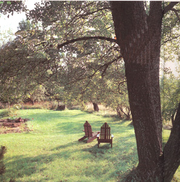

WALTER CHOROSZEWSKI
Some people want a perfect lawn. Our lawn is green all summer and requires no care other than mowing when needed. That's good enough for us. The tree in the foreground is the poplar, which in this late August shot is shading the house from the afternoon sun. The garden is on the left in this picture; its windbreak can be seen to the right of the chairs.